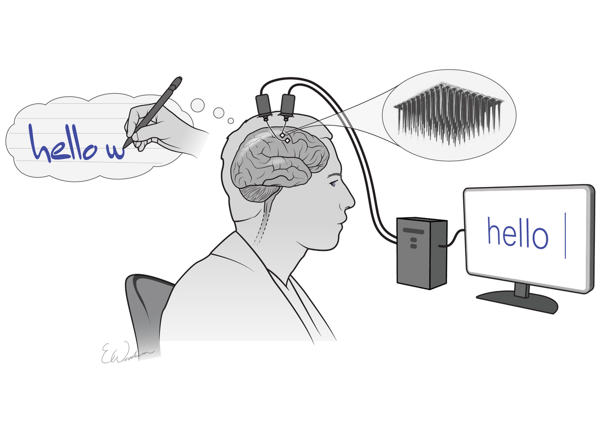
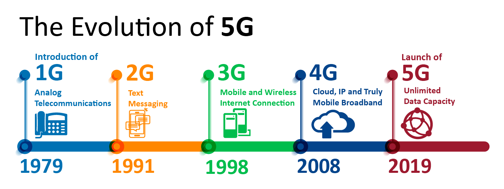
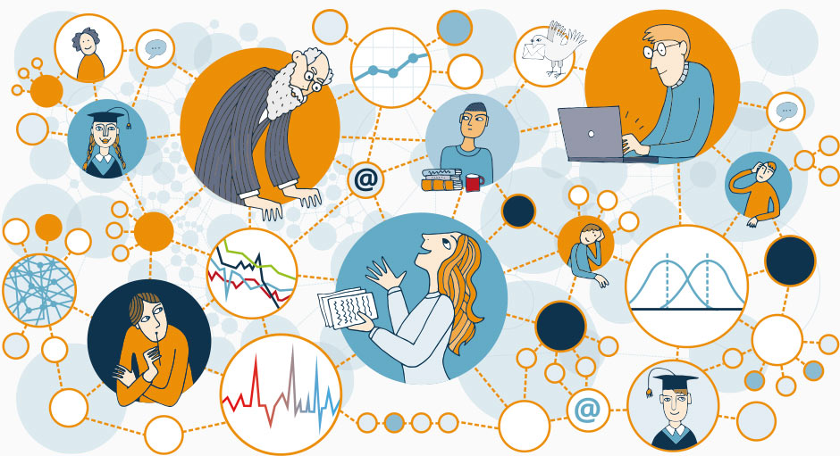
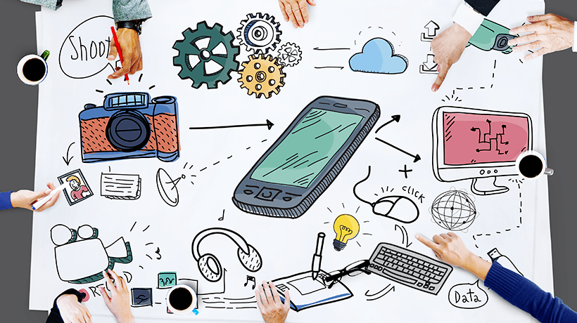
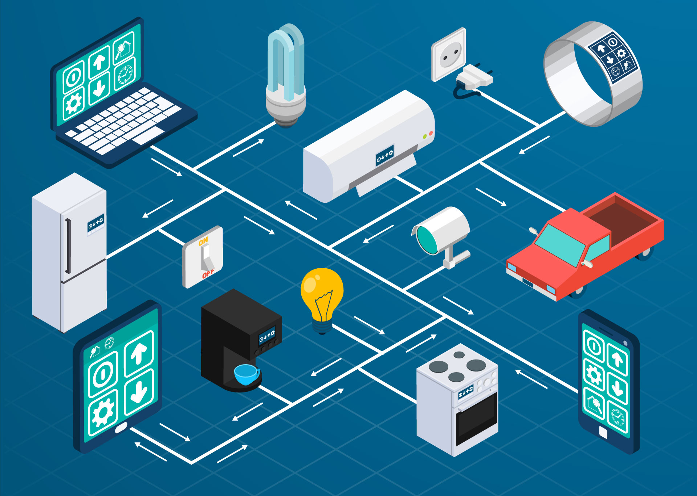
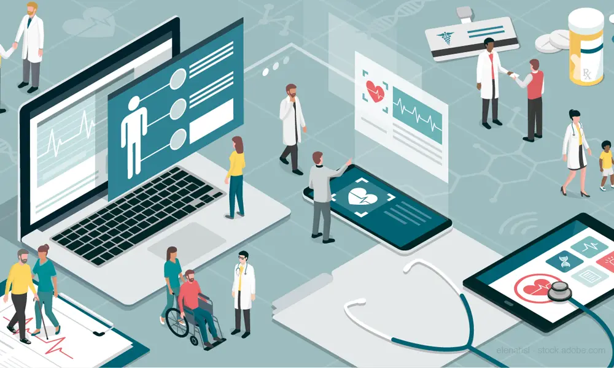
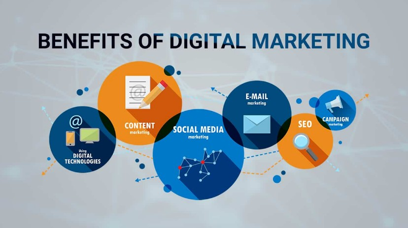

How has Technology impacted our daily lives?
BY PON LAMA ON 30 jan, 2024
Technology has become a necessity in every humans daily lives. Everypeople at the least has a mobile phone in their pockets, if not other advanced technology. This article presented below describes about different types of technology and how they have grown to become an impactful part of our everyday life and our businesses.
WHAT IS TECHNOLOGY?
The application of scientific knowledge (skills, methods, and processes) to the practical aims of human life, anything from the discovery of the wheel all the way up to computers and mp3 players is called technology. It can be incredibly simple or dazzlingly complex. It has a significant impact on how we live, work, and play. They manipulate and change the human environment. They make human life and problem-solving easier. We cannot even imagine a life without technology now.
The earliest and simplest form of technology is the development of knowledge that leads to the application of basic tools. The system of practical knowledge and problem solving to create tools is the idea/concept. And the gadgets and gizmos used are the tools. For example: Moving fast is the idea, and the wheel is the tool to move faster. (Read more in Wikipedia)
The 3 main types of technology are:
- 1.) Industrial:
- 2.) Mechanical: E.g.: Cars, Oven, Airplanes, Trains, Buses, Rockets, etc.
- 3.) Medical: E.g.: X-rays, Ultrasound, ECG, etc.
Industrial technology is the application of engineering and manufacturing technology to improve the speed, simplicity, and efficiency of production. Industrial technology employs innovative and technically skilled individuals who can assist a company in achieving efficient and profitable productivity. Optimization theory, human factors, organisational behaviour, industrial processes, industrial planning procedures, computer applications, and report and presentation preparation are common topics covered in industrial technology programmes. The primary responsibility of an industrial technologist is to plan and design manufacturing processes and equipment. An industrial technologist is frequently in charge of putting certain designs and processes into action.
E.g.: Electronics, Robotics, industrial machines, etc.
Mechanical technology, which includes wheels, cams, levers, gears, belts, and engines, is the first type. Mechanical objects are those that turn or allow motion in one direction to cause another type of motion. The wheel is one of the most important technological advances in human history, despite its simplicity.
E.g.: Cars, Oven, Airplanes, Trains, Buses, Rockets, etc.
One of the most important types of technology is medical technology. It includes medical science machinery and services that are powered by technology. Medical technologies include instruments for disease analysis, pain-relieving devices, and medications for treating and curing diseases. All of these things help to protect us from dangerous viruses and bacteria, extending our lives. The following are some examples of medical technology equipment.
E.g.: X-rays, Ultrasound, ECG, etc.
CURRENT STATUS OF TECHNOLOGY
The current state of technology is at its peak. The use of technology has never been in this amount. We cannot even imagine a life without technology now because everything is done online. People nowadays don’t have to go to school. If they want to study from their home, many schools have online education facilities. You can work from home. People make money from social media like YouTube, Instagram, TikTok, and Facebook. People now can make a career out of the internet. Everyone has a phone of their own. Even a 4, 5 years old baby cannot survive without a phone in their hands.
As technology is at its peak, there are many awesome new technologies available today. Some of them are listed below:
- 1.) Artificial Intelligence
- 2.) 3D printing
- 1.) Bespoke, cost-effective creation of complex geometries:
- 2.) Affordable start-up costs:
- 3.) Completely customisable:
- 4.) Ideal for rapid prototyping:
- 5.) Allows for the creation of parts with specific properties:
- 3.) Brain-Computer Interfaces
- 4.) Self-driving vehicles
- 5.) Robotics
- 6.) Big Data and Analysis
- 7.) 5G networks
- 8.) Cloud Services
While AI has been around for a while, it is now having an exponentially growing impact on the development of our society, economy, and military. It is evolving and being deployed at such a rapid pace that we can see it changing the way we live and interact.
AI investments by corporations and businesses of all sizes reached new heights in 2021, exceeding all previous expectations and predictions. In 2020, international corporate investment in artificial intelligence is expected to reach nearly 68 billion USD. The most visible advancement in AI use is seen in how we interact with voice assistants like Siri, Alexa, and Google Assistant. Many other companies and entities are working on AI for driverless cars, but none have reached the point where their technology can truly replace drivers.

3D printing is an additive process that involves building up layers of material to create a 3D part. This is the inverse of subtractive manufacturing processes, which involve cutting a final design from a larger block of material. As a result, 3D printing wastes less material.

Advantages of 3D printing:
This technology enables the simple creation of bespoke geometric parts with no additional complexity. Because no extra material is used, 3D printing can be less expensive than subtractive manufacturing methods in some cases.
The costs associated with this manufacturing process are relatively low because no moulds are required. The cost of a part is proportional to the amount of material used, the time required to construct the part, and any post-processing that may be required.
Because the process is based on computer-aided designs (CAD), any product changes are simple to implement without affecting manufacturing costs.
Because the technology allows for small batches and in-house production, this process is ideal for prototyping, as products can be created faster than with more traditional manufacturing techniques and without reliance on external supply chains.
Although plastics and metals are the most commonly used materials in 3D printing, there is also the possibility of producing parts from specially tailored materials with desired properties. For example, parts with high heat resistance, water repellency, or higher strengths can be created for specific applications.
Brain-computer interfaces allow humans to control machines with their minds. The technology is still in its early stages, but the possibilities are endless. It could, for example, help paralysed people regain control of their limbs and allow servicemembers to operate a drone hands-free on the battlefield.
However, establishing a direct link between the brain and the machine may raise concerns. It could, for example, provide users with unfair advantages by enhancing physical and cognitive abilities. Hackers could also steal information about a person's brain signals.
A self-driving car (also known as an autonomous car or driverless car) is a vehicle that travels between destinations without the assistance of a human operator by utilising sensors, cameras, radar, and artificial intelligence (AI). To be considered fully autonomous, a vehicle must be able to navigate to a predetermined destination without human intervention on roads that have not been modified for its use.
Audi, BMW, Ford, Google, General Motors, Tesla, Volkswagen, and Volvo are among the companies developing and/or testing self-driving cars. Google's test involved a fleet of self-driving cars navigating over 140,000 miles of California streets and highways, including Toyota Prii and an Audi TT.
In theory, if autonomous cars dominated the roads, traffic would flow more smoothly and there would be less congestion. The occupants of fully automated cars could perform productive tasks while commuting to work. People who are unable to drive due to physical limitations may gain new independence through autonomous vehicles and be able to work in fields that require driving.

Robotics is an engineering discipline that deals with the conception, design, manufacture, and operation of robots. The goal of robotics is to develop intelligent machines that can assist humans in a variety of ways. Robotics can take many different forms. A robot can be human-like or take the form of a robotic application, such as robotic process automation (RPA), which mimics how humans interact with software to perform repetitive, rules-based tasks.

Big data analytics is the often complex process of examining large amounts of data in order to uncover information – such as hidden patterns, correlations, market trends, and customer preferences – that can assist organisations in making informed business decisions.
Data analytics technologies and techniques, on a broad scale, enable organisations to analyse data sets and gather new information. BI queries provide answers to basic questions about business operations and performance.
Big data analytics is a type of advanced analytics that involves complex applications powered by analytics systems that include elements such as predictive models, statistical algorithms, and what-if analysis.
Big data analytics systems and software can help organisations make data-driven decisions that improve business outcomes. Benefits may include improved marketing effectiveness, new revenue opportunities, customer personalization, and operational efficiency. These advantages, when combined with an effective strategy, can provide a competitive advantage over competitors.

Fifth-generation wireless (5G) is the most recent iteration of cellular technology, designed to significantly improve the speed and responsiveness of wireless networks. Data transmitted over wireless broadband connections can now travel at multigigabit speeds, with some estimates putting peak speeds as high as 20 gigabits per second (Gbps). These speeds are faster than wireline network speeds and have latency of less than 5 milliseconds (ms), which is useful for applications that require real-time feedback. Because of increased available bandwidth and advanced antenna technology, 5G will enable a significant increase in the amount of data transmitted over wireless systems.

The term "cloud services" refers to a broad category that includes the numerous IT resources available via the Internet. The term can also refer to professional services that help with the selection, deployment, and ongoing management of various cloud-based resources.
The first definition of cloud services encompasses a wide range of resources that a service provider delivers to customers via the internet, which has become widely known as the cloud in this context.Self-provisioning and elasticity are features of cloud services; that is, customers can provision services on-demand and shut them down when they are no longer required. Furthermore, rather than paying upfront for software licences and supporting server and network infrastructure, customers typically subscribe to cloud services, for example, through a monthly billing arrangement. This approach makes cloud-based technology an operational expense rather than a capital expense in many transactions. Cloud-based technology, from a management standpoint, allows organisations to access software, storage, compute, and other IT infrastructure elements without the burden of maintaining and upgrading them.

IMPORTANCE OF TECHNOLOGY IN OUR DAILY LIVES
Technologies are advancing day by day. They are the result of the advancement of science and they make our life easier. So, technologies are very important and have been a part of day-to-day human lives.
- 1.) Communication:
- 2.) Education:
- 3.) Decision-making and Problem-solving:
- 4.) Health Care:
- 5.) Business:
People can now communicate from one part of the globe to another easily with the help of social media. Even professional fields totally function with the help of the latest technologies. And we can easily call from one phone to another from wherever and whenever we want.
Technology significantly contributes to Access to Information. The Internet has a significant role in it. Data and Information are like water in an ocean on the Internet. If an individual wants to learn about something, search it up on the Internet and you will probably end up knowing more than you need.
E-learning is one of the most significant contributions of technology to learning. You can not only research on the internet but can also communicate with your colleagues during the learning process, which increases productivity. Documentation and storage are also key things that help in increasing productivity. There are many varieties of applications available now to document any kind of document professionally. Nowadays there is also technology like voice messages, AI controls, etc. due to which users are not required to even type anything to write anything.
You can transform your learning style with online education resources. The web has many different types of online education resources like books pdf files, articles, journals, websites, websites like YouTube for videos, and also images which are mostly available for free. People nowadays are very fond of using videos to learn many different kinds of skills. There are websites where you can learn different skills at home by paying a certain amount of money online. YouTube videos have also made learning daily life skills like ironing clothes, cooking, knitting, etc. very easy, as there are tons of videos on different topics available on the net.
Technology has contributed to various human needs, and decision-making is one of them. Many people used to have decision-making problems in the past, as people weren’t aware of many things. But now since the Internet has become a part of the lives of many people around the globe. All of them are connected like a web, and information is spread through the web. This spread of information has helped in raising the IQ level of the average population of the world. So, People can make their own decision in different phases of life easily through the problem-solving skills developed due to the Iq level.
Technology has helped doctors answer all patient queries faster. There are various technological innovations in the health sector, such as the invention of certain drugs, the development of information technology, biotechnology, and development processes.
Technology has led to the development of some inventions to be larger and more useful, such as detectors and magnetic resonance imaging, and industrial devices with an automated system.
Advanced medical devices have made it possible to detect many diseases and have facilitated their treatment. In addition, they have provided the opportunity to complete some types of treatment at home, resulting in shorter stays in hospitals, and thus a reduction in the cost of treatment.
Business is one of the most beneficial areas of technology. The manager makes his decisions in a short time and he can easily solve problems, with the help of technology. Information technology and its applications in the business world have facilitated the use of computers and allowed the use of the Web, thus making work more flexible.
Technology is important for businesses because it helps them to be more efficient and productive. When businesses use technology, they are able to automate tasks and processes. This means that businesses can get more work done in less time, which allows them to save money on labor costs.
In addition, technology also allows businesses to improve their communication and marketing efforts. By using technology, businesses can reach a larger audience with their message. Additionally, technology can help businesses to track and analyze customer data, which can be used to improve the quality of products and services.
ADVANTAGES AND DISADVANTAGES
With Advantages comes Disadvantages also. Here are some advantages of Technology:
- 1.) Technology gives us ways to eliminate repetition.
- 2.) It gives us the ability to create more equality in our society.
- 3.) We have more knowledge available to us because of technology.
- 4.) Technology lets us have fun in unique ways.
- 5.) We understand the value of money better because of technology.
- 6.) Technology allows us to be more efficient with our time.
- 7.) We become innovators because of technology.
- 8.) Prices go down as technology levels improve.
- 9.) Technology improves our ability to communicate with one another.
- 10.) Technology adds convenience to our lives.
- 11.) We have access to more information than ever before in our history.
- 12.) We can go further and faster than ever because of technology.
Here are 11 Disadvantages of Technology in our daily Lives:
- 1.) Technology has addictive qualities that some people must manage.
- 2.) It is easier to falsify one’s qualifications because of technology.
- 3.) People can threaten others anonymously because of technology.
- 4.) Technology allows us to manipulate content to create echo chambers.
- 5.) People work longer hours than ever before because of technology.
- 6.) Technology can create social disconnects that we struggle to manage.
- 7.) We don’t always know how to repair the technologies we use.
- 8.) Technology creates a new series of data security issues to manage.
- 9.) Automation can make us lazy.
- 10.) We must create new laws that stay up-to-date with the latest tech trends.
- 11.) Technology can produce dangerous outcomes if we allow it.
IMPACT OF TECHNOLOGY
Before, the only means to communicate was to be physically present somewhere or to send letters via messenger like a pigeon. We couldn't be able to contact somebody who was far away when an emergency arose. Alexander Graham Bell's creation of the telephone in 1876 brought about a revolution in our thousands of years of conventional modes of communication.
.We can now communicate with anyone, at any time, from anywhere in the world. We are no longer constrained to our narrow confines. As technology advanced, countries around the world became more interconnected. Moreover, we discovered the concept of globalization and have now become global citizens.
As with other sectors of life, technological advancement has resulted in large improvements in our educational methods. We now have devices such as multimedia projectors that make lessons more participatory and enjoyable for students. Many video-calling platforms now allow students to join their classes from home. Due to the Covid 19 pandemic, educational institutions worldwide were off, yet teachers took classes online, and students did not lose their valuable time. It was not even imaginable 20 years ago, but technological advancements made it possible.
In today's world, no business could exist without the assistance of technology. Technology completely changed our conventional concept of trade and commerce. Technology has accelerated the evolution of the business. The technical sector is the largest business industry in the world today.
In conclusion, The impact of technology on human life depends on how we use it. Despite both the positive and negative impacts of technology, it is an unavoidable part of our lives. but it’s not the fault of technology it’s humans that misuse it. If we can ensure the appropriate use of technology it will always be a blessing for us otherwise it can be dangerous for keeping harmony in our life.
FUTURE OF TECHNOLOGY
The Future of technology is unpredictable. No One can see the future. But there are reasonable arguments that can be assured, based on the analysis of advances and trends of technology in the past. It is an undeniable fact that computers will continue to get more powerful, and cheaper and that they will be taking over the globe. Some huge potential technologies like biotechnology, nanotechnology, and other emerging technologies are just beginning to be exploited today and they will definitely continue to bear fruit.
Technology has advanced a lot, and it has been here for quite a long time now. It is not something unfamiliar to people anymore. It is crazy how technology has advanced so vastly, and at a fast pace over the last decade.
Here are some major shifts in the role of technology now from before:
- 1.)From trusted operator to business co-creator.
- 2.)From service delivery to value delivery.
- 3.)From cost center to a revenue engine.
- 4.)From cybersecurity to risk and resilience.
The future of technology is very promising. It is exciting how technology has developed and changed the way of living of people on earth.
Here are some of the best technologies to look forward to in the coming future:
- 1.)Quantum Computing
- 2.)Digital Twins – Future with Technology
- 3.)Artificial Intelligence
- 4.)Augmented Humans
- 5.)Blockchain
- 6.)Internet of Things (IoT) – Future with Technology
- 7.)3D Printing
- 8.)Robotic Process Automation
- 9.)Chatbots
- 10.)Augmented Analytics
- 11.)Cloud computing
- 12.)Natural Language Processing
- 13.)5G
- 14.)Neuromorphic computing
- 15.)Internet of Behavior
CONCLUSION
Technology has become a necessity in every humans daily lives. Everypeople at the least has a mobile phone in their pockets, if not other advanced technology. Therefore from this article we know about different types of technology and how they have grown to become an impactful part of our everyday life and our businesses. Technology and business goes hand by hand in this modern world. Since there is a huge markeet in digital market, businesses earn more if they can function well in a digital as well as real life market. But not only the business but even for the consumers, modern technology has made life easier as you can get anything from a touch of a hand. After the recent covid-19 virus breakout, from 2020 working from home and studying from home culture has been more implemented. With the help of technology communication sector has also been very pleasing to use and more effective. Hence, From this article now we know about the types of technology, how they are part of our life, and their importance along with the future of technology.
Printer World
About Printer World
Terms and Condition
Privacy Policy
Stay Connected
@gmail.com
+9800000000
Customer Care
Return and refunds
Contact Us
Follow us